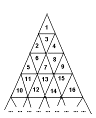

| Delta-wave |

On the triangular field shown on the picture, small triangles are numbered from 1 to oo (infinity). Traveller wants to go from triangle M to triangle N. Traveller can move only through the sides of triangles, not vertices. The number of sides he crosses is called the path length.
You are to determine the shortest path from M to N.
The first line is the number of test cases, followed by a blank line.
Each test case of the input contains integers M and N (1<=M,N<=1000000000), separated by some spaces.
Each test case will be separated by a single line.
For each test case, your programm should print the length of the shortest path from M to N.
Print a blank line between the outputs for two consecutive test cases.
1 6 12
3